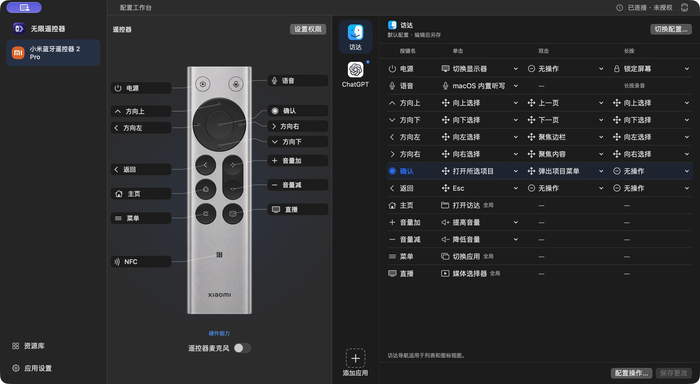
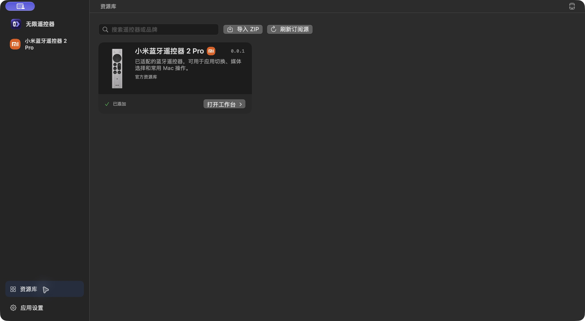
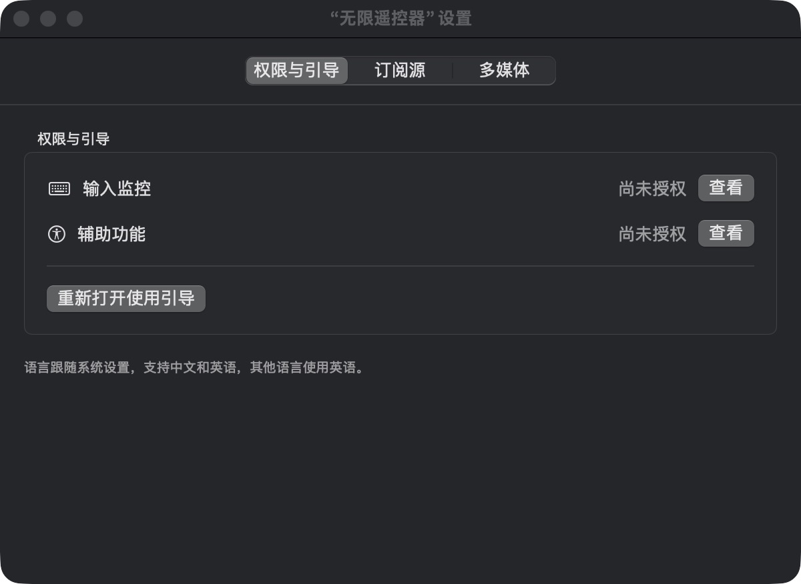
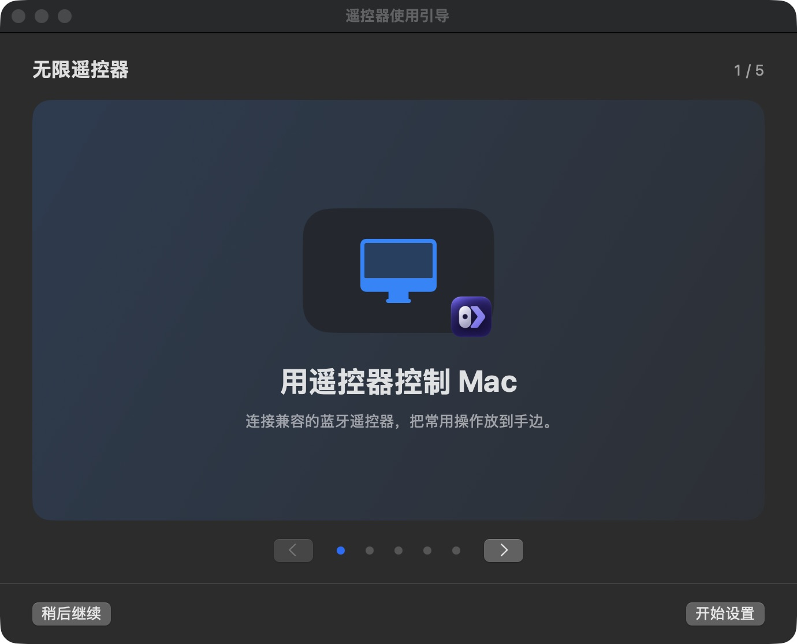

配置工作台
原始截图
图中正在编辑访达的配置，语音键继承 macOS 内置听写。蓝点表示另一个应用的配置当前生效。

Workspace工作台根视图WorkspaceTitle标题栏左侧WorkspaceRemoteControls标题栏右侧的连接状态与遥控器入口WorkspaceSidebar设备与页面导航DeviceWorkspace遥控器图区与按键配置区的容器DeviceStage侧栏右边的遥控器图区DeviceArtworkGuide机身和按键引线，位于 DeviceStage 内usesRemoteMicrophone设备区的机身麦克风开关，设备支持时显示。appMappingDeviceWorkspace 的配置区，应用列表和按键编辑器共用背景。AppRail加号及其虚线框占用与应用图标相同的 36 pt 方形区域。文字在下方，整项的悬停背景为 64 pt。activeBundleID生效应用对应的蓝点，独立于编辑选中状态KeyMappingEditor当前应用的按键配置。同列图标居中、文字左对齐；横杠与文字对齐，图标位留空。editableMappingControl语音键的配置菜单在单击格；支持按住录音时，长按格显示灰色提示。mappingFooter按键编辑器底部的配置与保存操作
资源库
原始截图
WorkspaceSidebar 与 ResourceLibraryView 并排。

Workspace资源库仍在同一个工作台窗口WorkspaceTitle标题栏与配置工作台共用下方的分割线。WorkspaceRemoteControls标题栏右侧的遥控器入口WorkspaceSidebar侧栏当前选中资源库ResourceLibraryView搜索工具栏下方直接显示型号卡片。libraryActions搜索、导入 ZIP 与刷新订阅源。刷新时，进度指示器显示在按钮右侧。searchField属于 libraryActionsResourceCard固定 344 × 160 pt。标题和遥控器预览共用上沿，版本号在右上角，底部放状态和操作。CatalogPreview型号卡片左侧的遥控器预览，沿固定预览区的顶部对齐。
应用设置
原始截图
图中是「权限与引导」。顶部也可切换到「订阅源」和「多媒体」。

AppSettingsView设置窗口的 SwiftUI 内容Picker · $pane选项卡绑定permissionsPane权限状态与重开引导入口showSetup()重开引导按钮调用的回调
遥控器使用引导
原始截图
欢迎步骤使用 SetupBanner，底部操作由 SetupGuide 统一提供。

SetupGuide引导窗口的 SwiftUI 内容stage.title当前引导步骤的标题stage.position用于计算当前步骤进度SetupBanner欢迎轮播与分页控件slide(_:index:)生成当前轮播画面current决定高亮的分页圆点arrow(_:title:destination:)生成轮播的前后按钮footer与 SetupBanner 并列的操作区primaryTitle主按钮文字